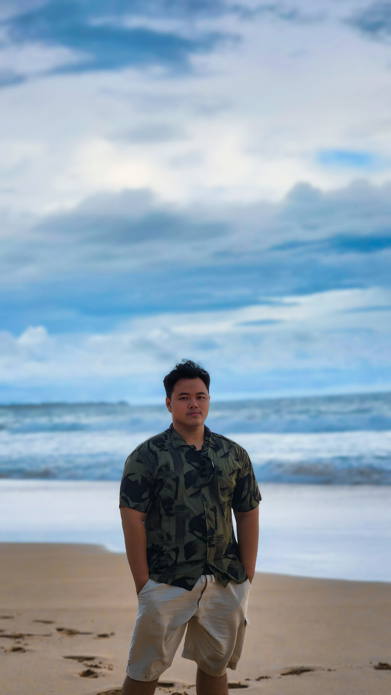

About Me
Tentang Saya
Hello, my name is Yudho Tri Putranto. I am an Informatics Engineering graduate from Universitas Gunadarma with experience as a QA and UI/UX designer in a 4-month project. During this time, I successfully contributed to completing a major project, combining my skills in quality assurance and designing user-centered, responsive web applications. I am passionate about delivering intuitive designs and collaborating to solve problems creatively.
↓ View Resume